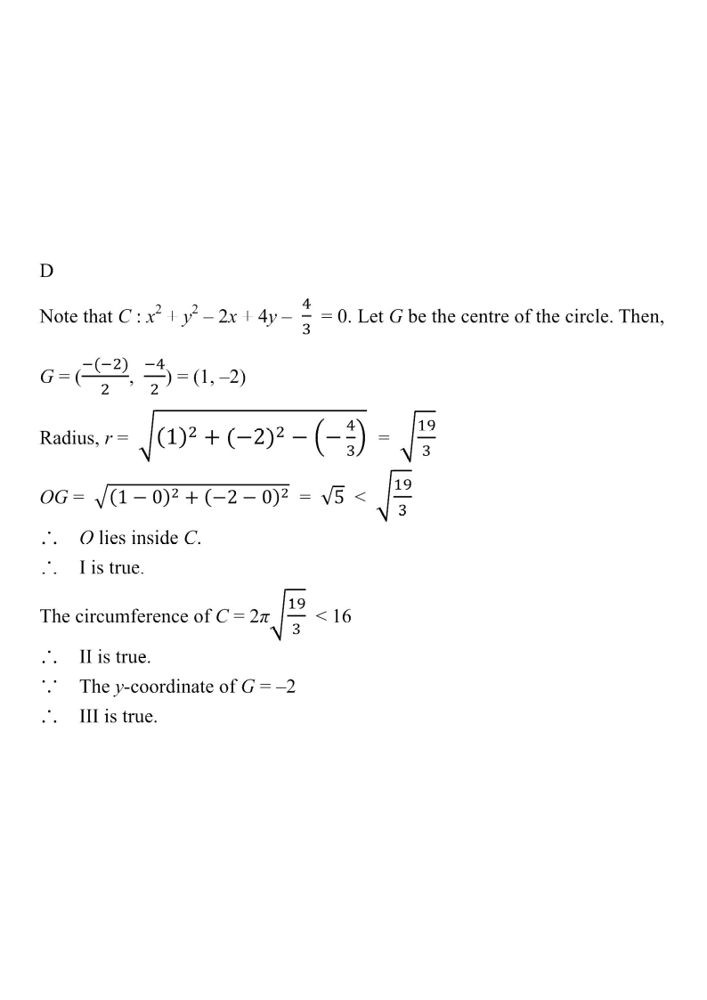

圓方程 · 1 分題

全式除以 $3$：$x^{2}+y^{2}-2x+4y-\dfrac{4}{3}=0$。
圓心 $G(1,-2)$；$r=\sqrt{1+4+\dfrac{4}{3}}=\sqrt{\dfrac{19}{3}}\approx2.52$。
I：$OG=\sqrt{5}\approx2.24<2.52$，原點在圓內 ✓
II：圓周 $=2\pi(2.52)\approx15.8<16$ ✓
III：圓心至 $x$ 軸距離 $=|-2|=2$ ✓
三項皆正確，故選 D。